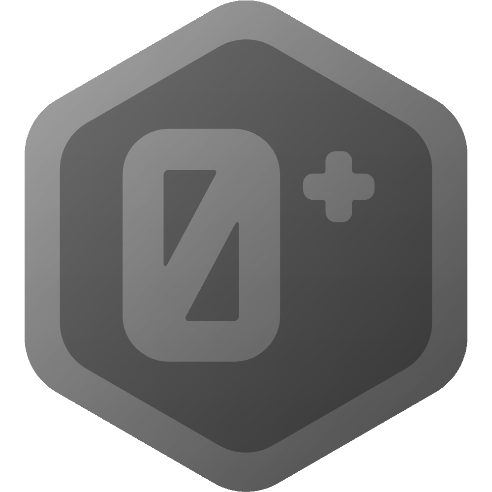
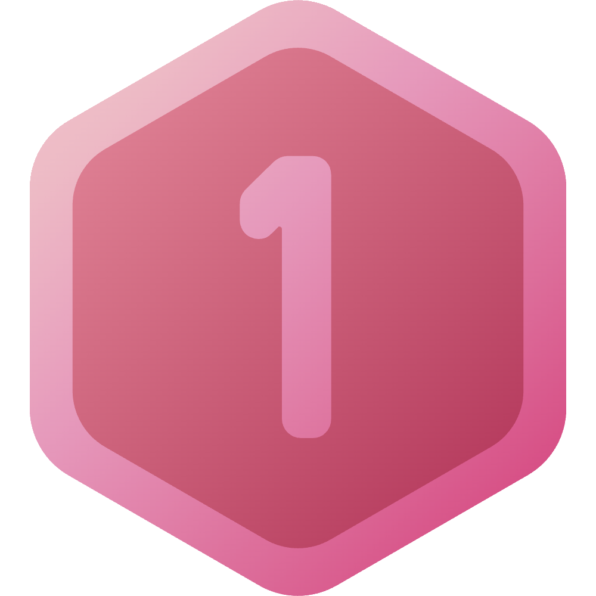
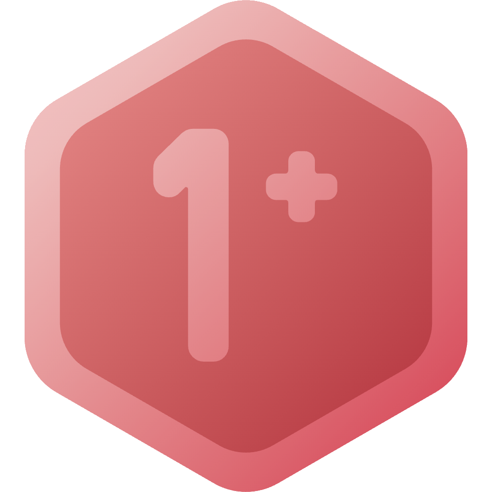
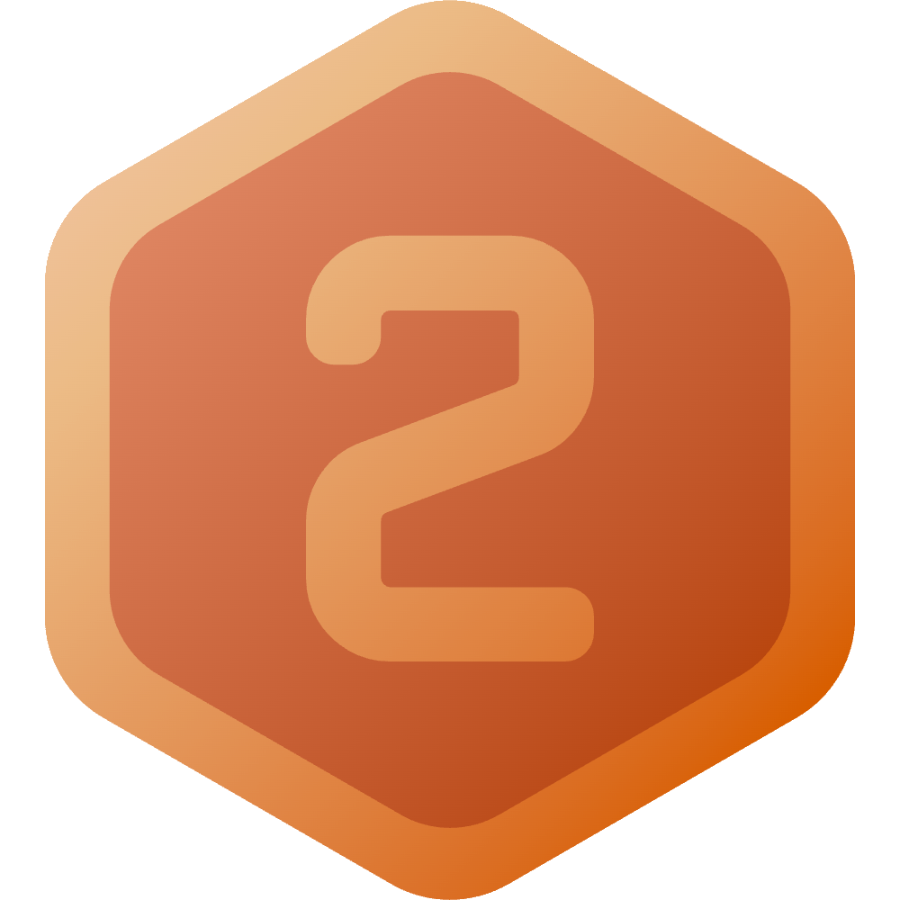
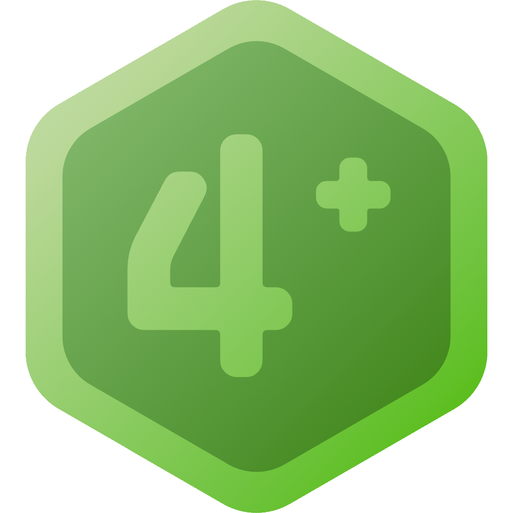
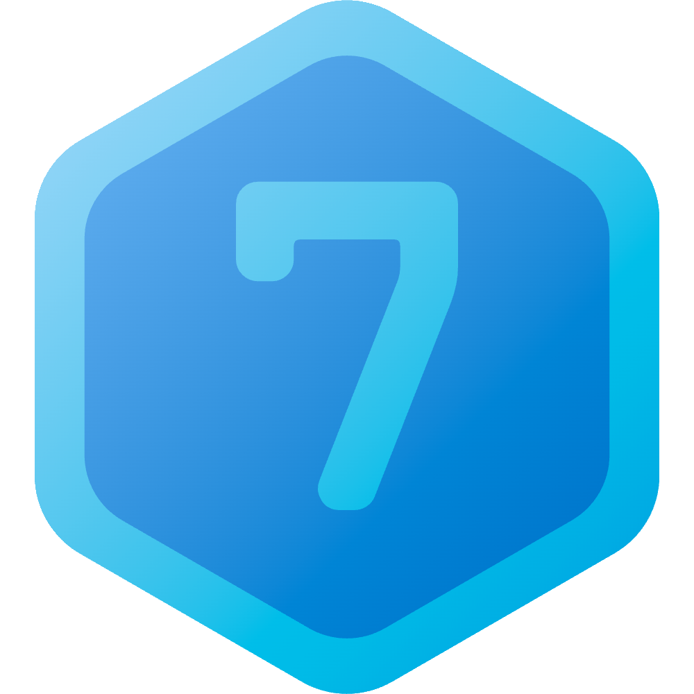
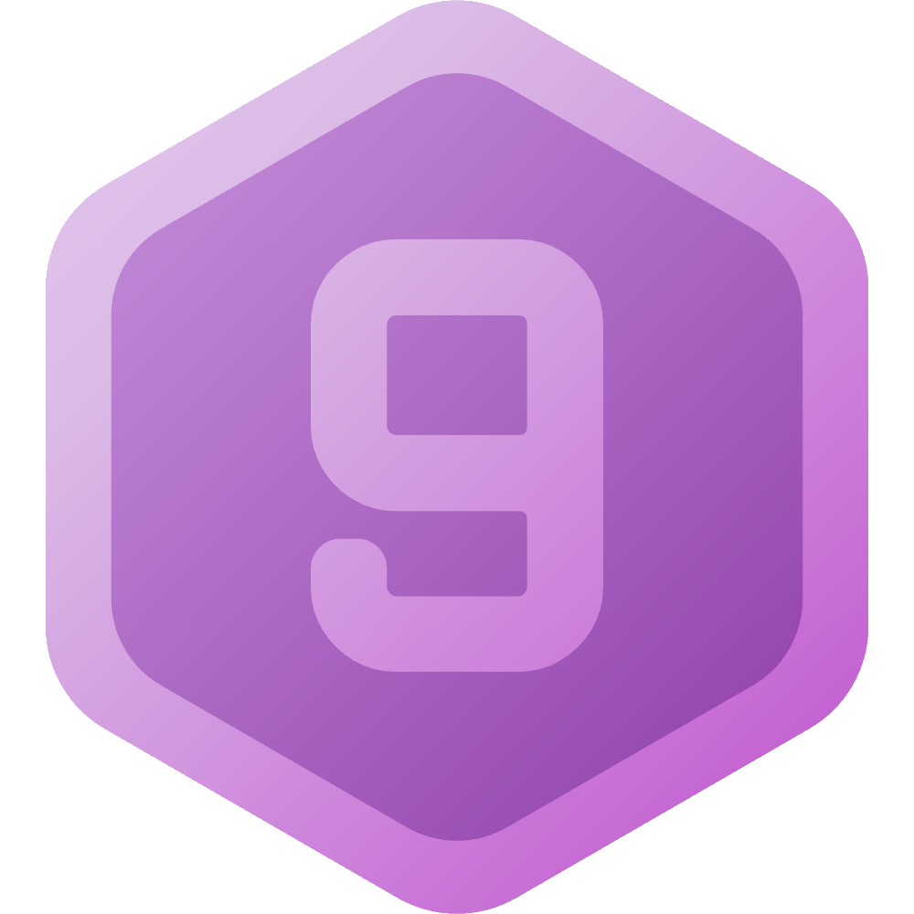
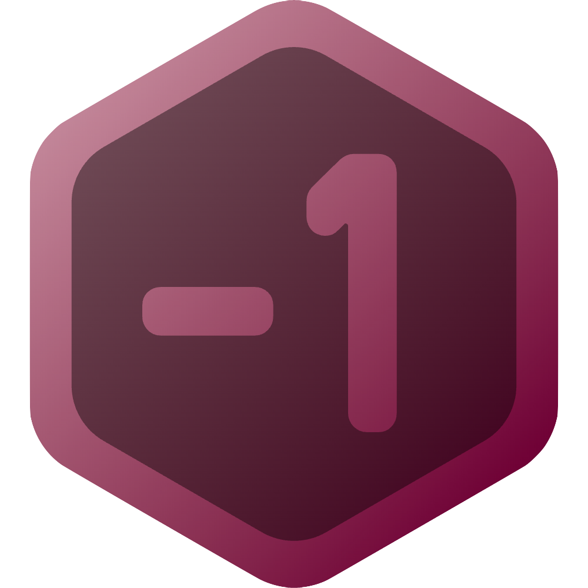

정보
재미로 만든 거임 별로 안 진지함
이거 단계 이미지 너무 예쁘지 않나요
사용 단계
기억 불가
즉시 잊어야 하는 정보이다. 기록된 정보는 이 단계를 가질 수 없다.
기록 불가
기록할 수 없어 언젠간 잊히는 정보이다. 기록된 정보는 이 단계를 가질 수 없다.
사용 불가
기록은 허용하지만, 그것 외에는 이 정보를 모를 때와 동일하게 행동해야 한다.
공유 불가
이 정보로 인해 행동을 바꾸는 것은 허용하지만, 이 정보를 대화 시 사용하는 것은 허용되지 않는다.
간접적 공유 가능
대화 시 이 정보를 사용하는 것이 허용된다. 이 정보의 내용을 명시하는 것은 허용되지 않는다.
전달 시 특정 불가
이 정보의 모든 내용을 전달할 수 있으나, 해당 정보의 내용의 당사자를 추측할 수 없도록 수정해서 전달해야 한다.
예외로, 당사자 본인에게는 정보의 내용을 있는 그대로 전달할 수 있다.
이 제한은 이 정보의 내용을 명시하여 공유할 때에만 적용된다. 간접적 공유 시, 즉 이 정보의 내용을 명시하지 않을 때에는 이 정보와 관련된 사람을 언급할 수 있다.
일부에게 전달 허용
정보의 내용의 당사자와 특정한 관계가 있는 사람에게는 이 정보의 내용을 있는 그대로 전달할 수 있다.
무슨 관계가 있는 사람에게만 공유할 수 있는지는 정보마다 다르며, 별도로 표시해야 한다.
당사자와 해당 관계가 없는 사람이라도, 당사자를 추측할 수 없도록 정보의 내용을 변형한다면 전달할 수 있다.
전달 허용
이 정보의 내용을 있는 그대로 전달하는 것이 허용된다.
열린 정보
이 정보는 모두가 알아야 하므로, 전달을 주저하지 않아도 된다.
 의견 표출 허용
의견 표출 허용
이 정보의 내용에 대한 의견을 표출하는 것이 허용된다.
당연한 정보
이 정보는 압도적인 대다수가 이미 알고 있으며 의견 표출이 자유롭다고 간주할 수 있다.
추가 수집 단계
기억 불가
사용 단계 0 및 0+와 호환
추가 정보의 수집은 고사하고 기존 정보의 보유도 허용되지 않는다.
추가 정보 없음
모든 사용 단계와 호환
정보의 특성상 추가 정보가 생기지 않는다.
수집 불가
사용 단계 1 및 1+와 호환
추가 정보의 수집은 어느 경우에서든 허용되지 않는다. 예를 들어, 누군가가 직접적으로 해당 정보와 관련된 말을 내게 했다고 해도 이를 기억할 수 없다.
수집 목적 행동 불가
사용 단계 1에서 5까지와 호환
추가 정보가 수집되었을 때 이를 기억하는 것은 허용되나, 추가 정보의 수집을 위해 행동을 바꾸는 것은 허용되지 않는다.
소극적 수집 가능
사용 단계 1+에서 5까지와 호환
추가 정보를 수집할 수 있으나, 대화를 통한 방식은 허용되지 않는다.
타인이 먼저 해당 정보를 대화의 주제로 삼았을 때와 같은 경우 해당 대화에서 수집한 추가 정보는 기억할 수 있다.
적극적 수집 가능
사용 단계 2에서 5까지와 호환
대화를 통한 추가 정보 수집이 허용된다. 다만 대화 시 정보의 내용을 명시해서는 안 된다.
직접적 질문 허용
사용 단계 2에서 5까지와 호환
대화를 통한 추가 정보 수집이 허용되며, 정보의 내용을 명시하며 물어보는 것도 허용된다.
이 정보의 사용 단계가 4+나 5가 아니라면, 정보의 내용을 명시하는 질문은 당사자에게만 할 수 있다. 정보의 사용 단계가 4+라면 정보를 있는 그대로 공유해도 되는 사람에게만 할 수 있다.
정보 수집 가능
사용 단계 5부터 9까지와 호환
추가 정보의 수집을 주저하지 않아도 된다.
no eaves
내가 참여하지 않은 대화에서 얻은 정보는 중요도 등에 따라 다음 단계들 중 하나를 부여한다.
0단계
정보의 중요도 등이 상당함을 보일 수 없다면 이 단계를 부여해야 한다.
1단계
정보의 중요도 등이 상당하더라도, 그 정보가 추가 정보 수집을 통해 사용 단계 7(열린 정보) 이상이 될 가능성을 보이지 못한다면 이 단계를 부여해야 한다.
2단계
2단계부터 6단계까지의 정보는 추가 정보 수집의 결과를 통해 사용 단계 7 이상이 될 가능성을 다시 판단하여야 하며, 가능성이 사라졌다면 1단계로 변경해야 한다.
가능성이 사라지지 않았다면, 시간의 흐름에 따라 단계를 높여야 한다.
3단계
4단계
5단계
6단계
7단계
특수 단계
기억 불가
사용 단계 0에 해당하는 정보 중, 나의 의지로 기억하지 않기로 결정한 정보임을 명시하는 단계이다. 기록된 정보는 이 단계를 가질 수 없다.
정보가 사용 단계 -1로 지정되었다면 이후 해당 정보에 대해 언급하거나 생각하는 것을 의식적으로 멈추려고 노력한다.
예시
정보의 특성에 따라 예시에서 벗어난 단계를 부여할 수 있다.
/ / 생각
/ / / / / / 개인적인 사건(진행 중)
/ / / / / / 개인적인 사건(완료)
/ / / / / / / 타인끼리의 대화, 타인의 사건
위에서 서술한 바와 같다.
/ / 개인적이지 않은 사건
확인받지 않은 커플
커플 현황의 작성을 위한 본인 확인 과정 때문에, 사용 단계 4와 추가 수집 단계 4+ 이상이 강제된다.
/ 확인받은 커플
커플 현황의 작성 때문에, 사용 단계 4 이상이 강제된다.
/ / 헤어진 커플
커플 현황의 작성 때문에, 사용 단계 2 이상이 강제된다.